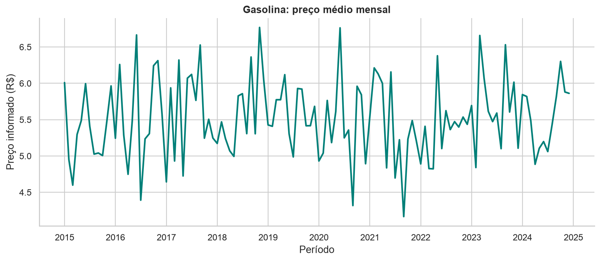
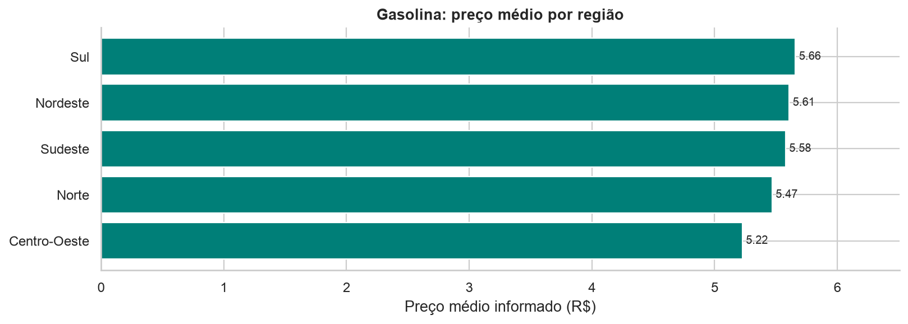
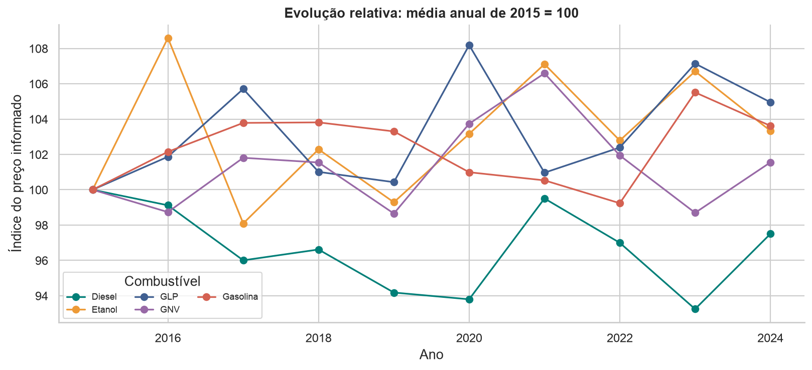

Como os preços mudaram?
Comparação mensal e anual, com a mesma base de cálculo dentro de cada combustível.
Evolução dos preços e diferenças entre UFs, de 2015 a 2024.
Parti da base fornecida pelo professor para comparar períodos, UFs e regiões. O notebook apresenta os cálculos; o dashboard permite mudar o recorte e acompanhar os resultados.
Comparação mensal e anual, com a mesma base de cálculo dentro de cada combustível.
Rankings por UF e região, acompanhados da quantidade de observações.
Dispersões e correlação de Pearson, sem atribuir causa aos resultados simulados.
Recorte de referência: todas as observações de gasolina, de 2015 a 2024. Os indicadores do dashboard mudam conforme os filtros.
875 observações, com média simples.
O DF tem a menor média: R$ 4,65.
Outubro de 2020, em relação à média de setembro.



Esta análise descreve uma simulação. A fonte não documenta as unidades físicas dos combustíveis; inflação e petróleo variam por observação. Os resultados não são preços oficiais nacionais nem orientação de compra.
Conferi os tipos, as datas e os intervalos de preço. Mantive as observações distintas e agrupei somente no momento de calcular as médias.
Zero valores ausentes e zero linhas inteiras duplicadas. As 503 ocorrências adicionais da mesma chave foram preservadas. Variações mensais usam apenas meses consecutivos.
Seis filtros, KPIs dinâmicos, abas, tabelas e exportação. A base é persistida em SQLite e lida com SQLAlchemy. Correlação de Pearson complementa a análise.
PythonPandasNumPyMatplotlibSeabornStreamlitSQLAlchemy + SQLite
No Colab, envie o CSV quando a célula de leitura solicitar. O notebook pode ser executado sem caminhos específicos do meu computador.